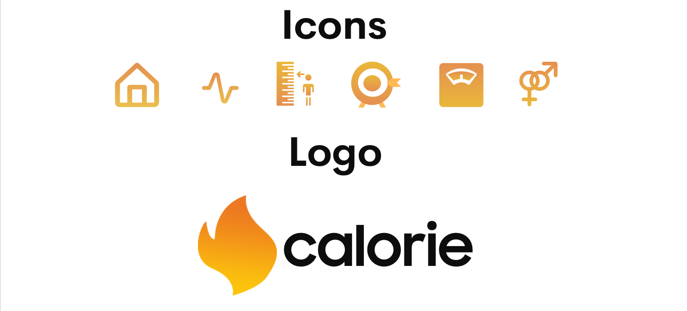
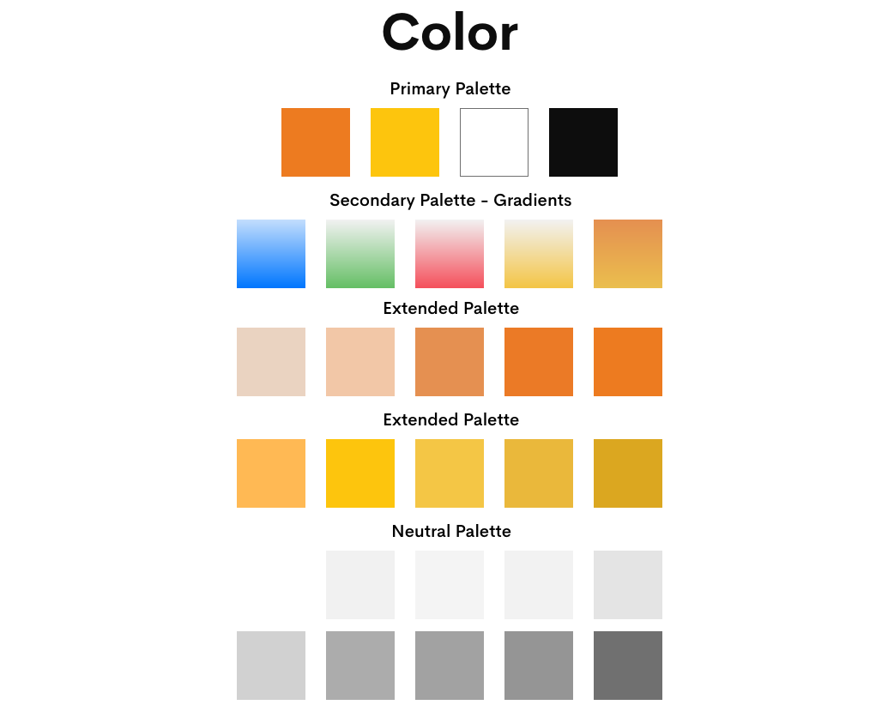
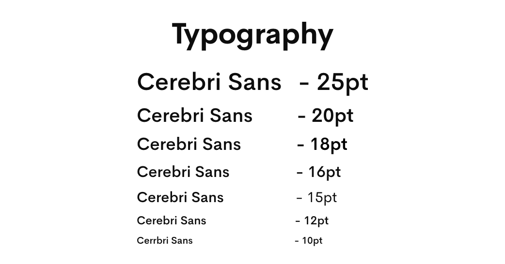
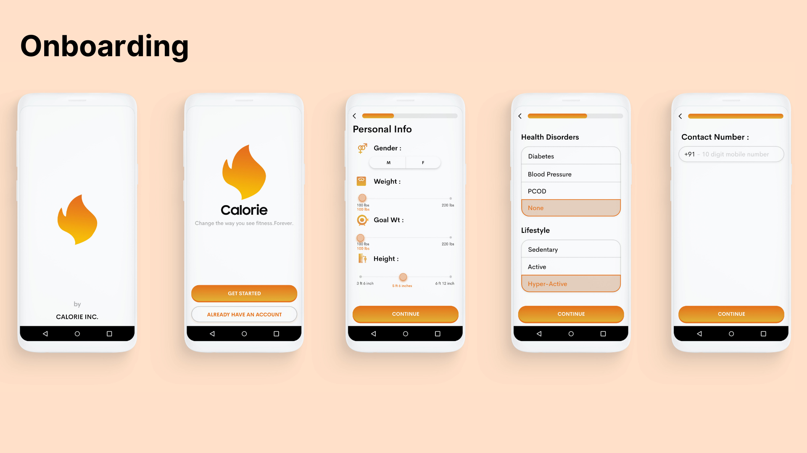
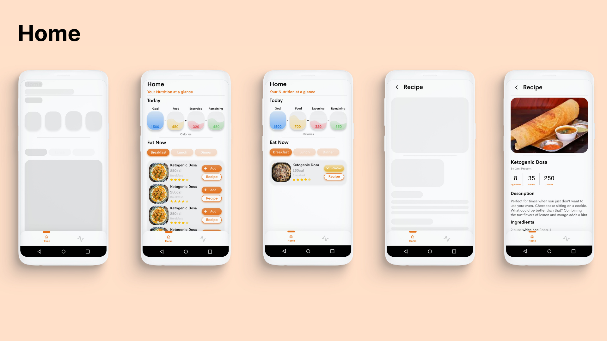
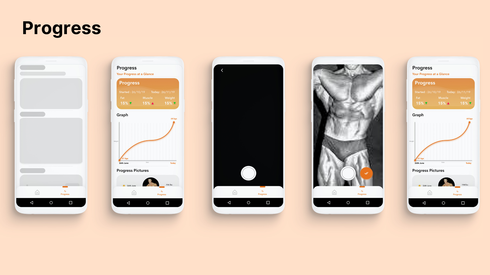

Spofity for Food
How I tried creating the spotify for food to help people make quick choices while dieting by suggesting them the food they love eating?

Project Overview
Naively solving my problems.
2018 was the year I lost close to 20 kgs following a keto diet, and a lot of my friends and relatives wanted to do the same. Considering each individual case is different, it became difficult for me to consult each one of them and also send them recipes to cook. That’s when the idea for Calorie came up.

Role + Tools + Timeline
-
My Role
-
Co-founder : UI / UX + Research
-
Duration
-
3 Months
-
Tools
-
- Adobe XD
- Adobe Photoshop & Premier Pro
- Google Forms & Docs
- Pen and Paper
The Problem
Each Person Is Different
Understanding the user was crucial before starting this process - considering I was consulting people and getting them to live a healthy life defining the problem was easy.
My Challenge - Diet Consultant
People Challenges
Research
Understanding the User
The Survey - I prepared a survey with Google forms and distributed it on Reddit and a few fitness focused groups on Facebook. Understanding these problems not only kept me on track but also motivated to work on this further.
Results
What they had to say!
“ I don’t understand what to eat and how much to eat - finally I eat junk”
“ When I am down or sad - usually I cheat on my diet and later feel terrible”
“ Eating out with friends has been difficult and sometimes I question myself - why am I doing this?
“ The biggest headache is figuring out the amount of macros and then cooking it praying that I am not out of required groceries ”
User Personas
Understanding the Users
1. Cusher Lata
A 50 year old teacher has been advised to lose weight by the doctor due to diabetes and blood pressure.
Habits - Schedule
Pain Points
Goals
2. Yogi Uthgire
A 38 year old businessman has reached unhealthy levels of obesity and is tired of dieting.
Habits - Schedule
Pain Points
Goals
Defining the Flow
Modelling the flow after Consulting
I was solving my own problems,so modelling the flow after my consulting procedure was crucial for a decent experience.
How I Consulted?
Minimum Viable Product
Launching the MVP Quickly
Initially, based on the experience I had on consulting people I designed the initial product.
The Dropbox Way
It was then time to launch it the dropbox way - I created this video so people could understand how the product worked and we could collect valuable feedback.
Focus
Reducing Cognitive Load
Our product was hitting quite a few use cases and as a startup you always need focus - Talking to people who signed up for our beta program got us that focus.
Two Aspects were what we thought were most important
Targeting People with a Strong WHY?
The other features didn’t affect people with a strong Why? On getting fit and healthy.
User Flow
Defining the User Flow
Up until now I had a vague idea of how the app will function. Mapping the basic
flow of the app forced me to figure each step on the path the users will take throughout the
solution. I first sketched it on paper and then digitally rendered it.
.png)
Mock-Ups
Sketches
This was the first step to help me outline the app and visually
imagine
it.

Brand
The Branding
While designing the logo I was on the look for something that could
closely symbolize "calorie". What a calorie could look like? Calories are fuel to our body, calories
to the body are substances it can burn to create energy. What I came up with was a fire, flame like
looking logo.

Color
Color Palette
The color for the app was directly taken from the logo for
consistency.
it.

type
Typography
It is a well-balanced sans serif typeface that seems to complement
the
interface and resemble Helvetica. Simplicity was the leading mantra; therefore, I decided to go with
just one font
family.

Interactions
Guiding the User
The User was usually confused while adding dishes and didn’t understand where the calories were added - so these interactions were crucial for usability.


High Fidelity
Final Designs
Onboarding
The Onboarding Flow was designed to understand three aspects
- Personal information of the User
- Health History of the User
- Food Preferences

Home
Home is where the user gets a ready made diet plan based on
his
preferences of food
- The user can add the recipe he plans to eat
- View the Recipe suggested
- Track the macros

Progress
Progress is where the user can
- Track ones progress in weight
- Add Progress Pics
- Get analytics on various aspects

Conclusion
What I Learned?
Designing an app is always challenging but highly rewarding. The Fitness Space is clearly one of the most competitive space in terms of apps - But I believe iterating on this product fast with more usability tests could heavily impact the results. Understanding people's motivations towards fitness was quiet insightful Self-discovery and working with developers was the biggest learning.